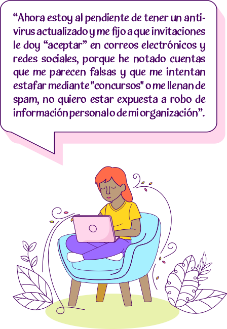
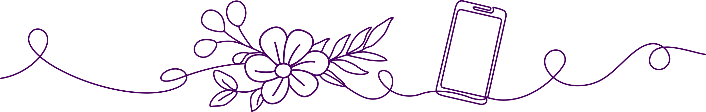

AUTOCUIDADO FÍSICO
Mantengo un cuerpo saludable: Cuido mi salud física, sexual, reproductiva y una nutrición adecuada. Para descansar elimino el estrés, duermo libre de tensiones y realizo rituales de sanación.

Lo que se sabe
En esta clave resaltamos los siguientes puntos a tomar en cuenta en el cuidado de la salud física:
Caricia para el alma
Presiona la imagen y descubre el poema
Cuida de ti misma
Vuelve a ti misma, conecta contigo y cuida de ti misma.
Tu cuerpo te necesita, tus sentimientos te necesitan, tus percepciones te necesitan.
La niña herida que hay en ti te necesita.
Tu sufrimiento necesita que lo reconozcas.
Vuelve a ti y ocúpate de todo eso.
Practica el caminar consciente y la respiración consciente.
Hazlo todo con atención plena para poder estar realmente ahí, para ser capaz de amar.
Autora: Thich Nhat Hanh.
El arte de cuidar a tu niño interior.
Te invitamos a descargar y leer manual donde se menciona más informacion útil.
AUTOCUIDADO EMOCIONAL Y MENTAL
Conecto con mis emociones: Libero mi voz y mi fuerza para sanarme, expreso asertivamente lo que pienso, siento y quiero. Me permito ser resiliente, a través de la risa, el gozo, el placer sexual y erótico. En armonía busco ayuda y me dejo ayudar.

Lo que se sabe
Segun la Organización Mundial de la Salud, "La salud es un estado de bienestar en el cual el individuo es consciente de sus propias capacidades, puede afrontar las tensiones normales de la vida, puede trabajar de forma productiva y fructífera, y es capaz de hacer una contribución a su comunidad".

El Instituto Mexicano del Seguro Social, nos dice que, la salud mental es importante porque puede afectar la salud fisica, por ejemplo, los transtornos mentales aumentan el riesgo de accidentes cerebrovasculares,diabetes tipo 2 y enfermedades cardiacas.
El cuidado de la salud mental puede ayudar a:


Caricia para el alma
Presiona la imagen y descubre el poema
El cuerpo en quitud
La respiración suave y serena.
Soy mi refugio.
El descanso circula dentro de mi.
El descando me llena.
Bebo del no hacer.
Repongo energia.
Me acuna el silencio.
Me vuelve simple,
más simple, más simple.
Me saco esta capa,
y esta,
y esta otra.
Acá estoy.
Tomo refugio en mí.
Soy presencia.
Y es suficiente.
Soy suficiente.
Autora: Guadalupe Seijo.
Conectar con nuestro cuerpo: Regando Semillas.
Te invitamos a descargar y leer manual donde se menciona más informacion útil.
AUTOCUIDADO LABORAL
Equilibrio mi activismo, mi vida personal y laboral: Participo en redes basadas en la filosofía feminista. Aplico el protocolo de seguridad individual y colectiva al realizar tareas de activismo público. Pongo límite a agendas y horarios laborales, respeto fines de semana, vacaciones y días festivos.

El camino del aprendizaje
Esta es una de las claves de autocuidado que al principio nos parece difícil porque hemos aprendido a entregar la vida a nuestro trabajo. Es importante reconocer qué, aunque sepamos de la importancia de nuestra labor y la realicemos con un gran compromiso, si no descansamos lo suficiente, nos agotamos en extremo, nos enfermamos y al final nos vemos obligadas a parar.
Para que el autocuidado sea una realidad en las organizaciones, es fundamental establecer Políticas de Cuidado Colectivo, lo que implica poner en el centro la vida de las DDHH y mantener un equilibrio saludable entre la vida personal y la laboral. Para ello podemos implementar actividades como las siguientes:
Caricia para el alma
Presiona la imagen y descubre el poema
La belleza de la culpa
Cuando dices NO,
Cuando estableces limites,
Puedes sentirte culpable.
Maravilloso. ¡Siéntete culpable!
Y di NO de todos modos,
Establece límites de todos modos.
Di tu verdad más profunda de
todos modos.
Sentirse culpable no es tan malo
Cuando empapas esa experiencia
Con curiosa conciencia.
Sostén "al cumplable" en tus brazos.
Dale tu habitación.
Respira el malestar.
Dejalo sentirse "mal" por un timepo.
Y di tu verdad de todos modos.
Di NO de todos modos
Establece limites de todos modos.
A veces dices SÍ para evitar el
dolor de la culpa, ¿no?
Ignoras tus propios límites para
evitar el dolor.
Pero el dolor es soportable.
Puedes sobrevivirlo.
La culpa se levantará como una ola, a veces.
Y desaparece.
Y se levanta de nuevo, tal vez.
Y finalmente pasa.
Pero te mantendrás fiel a ti misma
independientemente.
En tu camino, en tu integridad.
La culpa como una dulce compañera.
La culpa como una niña fragil que necesita tu amor.
La culà como una aliada en el camino.
Ya no estás controlada por la culpa,
cuando estás dispuesta a sentirla.
Autora: Jeff Foster
Te invitamos a descargar y leer manual donde se menciona más informacion útil.
AUTOCUIDADO DIGITAL
Cuido mi seguridad digital: Hago uso estratégico de la tecnología, plataformas digitales, redes sociales, conozco mis derechos digitales y de qué manera la ley me protege. Promuevo la desconexión digital.
Lo que se sabe
La violencia digital contra las mujeres se refiere a la violencia y el acoso en línea dirigidos a mujeres, y que tiene el potencial de afectar su seguridad, privacidad y bienestar psicológico. Puede manifestarse de diversas formas, desde el acoso y la intimidación en línea hasta la difusión no consensuada de imágenes íntimas o la exposición de información personal.
La violencia digital contra las mujeres puede tener graves consecuencias para su bienestar y seguridad, como la pérdida de empleo, la exclusión social, así como un impacto emocional profundo, incluyendo el estrés, la ansiedad y la depresión, entre otras manifestaciones.

Ley Olimpia es una ley mexicana que busca prevenir, sancionar y erradicar la violencia digital de género, en particular, la difusión no consensuada de contenido íntimo, también conocido como "porno venganza". Fue promulgada por primera vez en el estado de Puebla, México, en 2018, y posteriormente se ha adoptado en otros estados del país.
A continuación, se presentan algunos tipos comunes de violencia digital de género
Esto puede ser utilizado para acosar o difundir información falsa o difamatoria.
Caricia para el alma
Presiona la imagen y descubre el poema
El poder de elegir.
Yo estaba encerrada en una concha
Creía que era incapaz de cambiar mi vida.
Luego encontré la profunidad del mar,
la belleza del cielo,
la libertad de los págaros,
la fuerza del viento,
la ligereza de las nubes,
la luz del sol,
y he sentido que todo eso era yo.
Yo era profunfa como el mar,
bella como el cielo,
libre como los pájaros,
potente como el viente,
ligera como las nubes,
luminosa como el sol,
y entonces he elegido volver
a ser lo que era.
Autora: Annie Marquier
Te invitamos a descargar y leer manual donde se menciona más informacion útil.